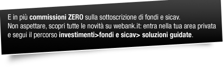

|
||||||
|
Gentile Nome Cognome, negli ultimi mesi abbiamo ampliato la nostra offerta: ti abbiamo proposto oltre 800 fondi, nuove Case di Gestione, strumenti di ricerca e analisi evoluti, sviluppati con i maggiori esperti del settore. Oggi ti presentiamo una grande novità: le SOLUZIONI GUIDATE, uno strumento esclusivo, il primo sul mercato italiano, che ti supporterà nella scelta dei fondi e nella costruzione di un portafoglio efficiente e adatto alle tue esigenze. Puoi creare da solo e in autonomia il tuo portafoglio diversificato scegliendo tra due percorsi : |
||||||
| fondi e sicav> soluzioni guidate." style="line-height:15px;"/> | ||||||
| Un saluto cordiale, Il team di Webank |
||||||
| (*) L'articolo è tratto dallo speciale "Tutto Risparmio, famiglia e soldi sicuri". Il Sole 24 Ore, venerdi 2 settembre 2011 - n. 239. | ||||||
| Messaggio promozionale. Le informazioni riportate non costituiscono offerta di vendita né sollecitazione all'investimento. Prima dell'adesione leggere la relativa documentazione d'offerta. I rendimenti passati non sono indicativi di quelli futuri. In relazione alle conoscenze e all'esperienza i prodotti di risparmio gestito pubblicizzati potrebbero non risultare appropriati per tutti gli investitori. | ||||||